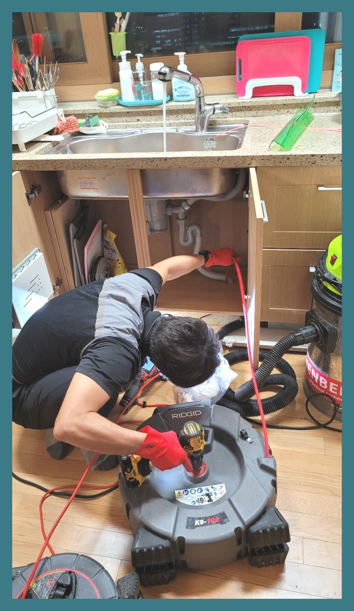
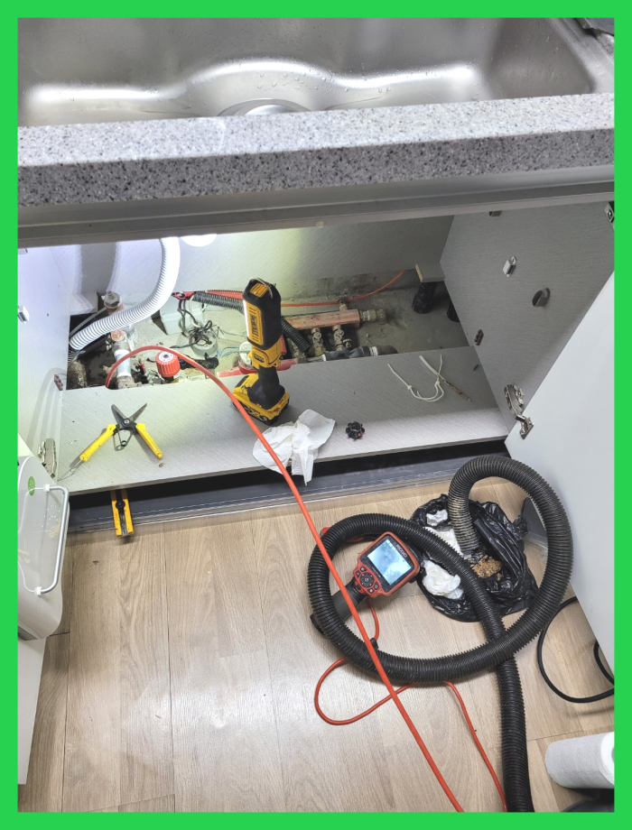
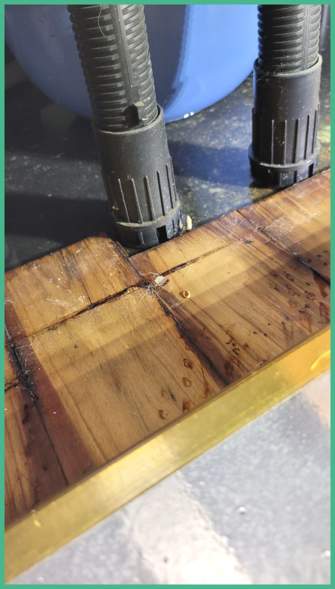
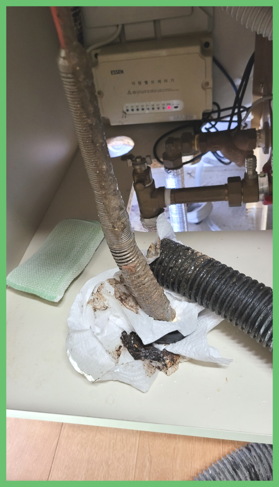
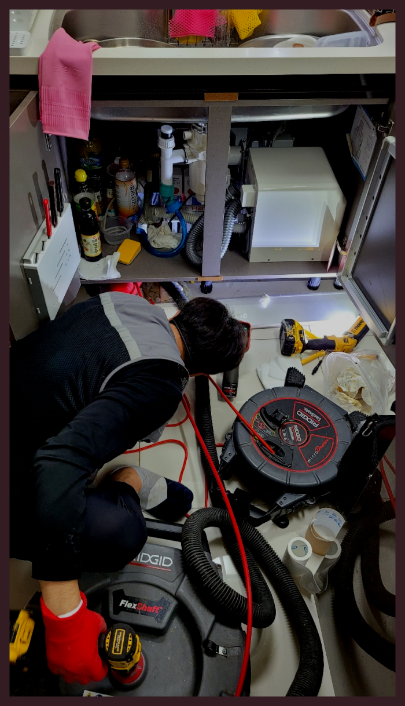
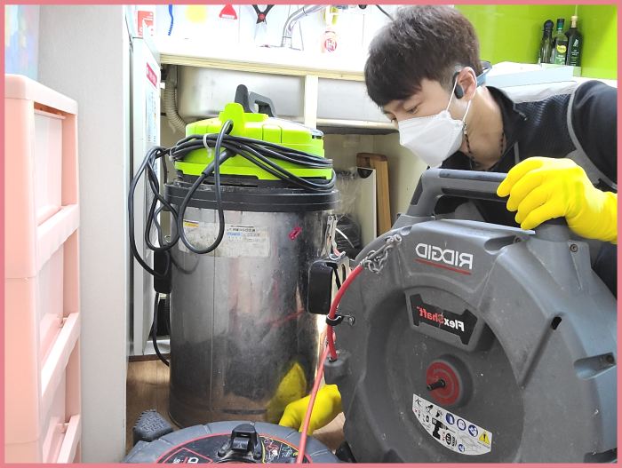

🏠 원삼 싱크대배수관막힘 이동읍 하수구역류 배관설비
용인 싱크대막힘 전문 시공 후기

📋 작업 개요
- 위치: 용인
- 서비스 유형: 싱크대막힘, 변기막힘, 하수구막힘, 배관막힘, 누수수리, 역류해결, 뚫는업체, 배관청소
- 작업 일시: 2023. 12. 25. 22:40
- 업체명: 하수구수사대 (010-5615-2118)
🔍 문제 상황
반갑습니다!
설비전문업체 "하수구수사대"를 찾아주셔서 감사합니다.
써버린 물들이 배수구를 지나서 흐르지 못하면 막힘이나 역류증상으로 문제가 생기기 마련입니다.
원삼 싱크대배수관막힘 이동읍 하수구역류 배관설비
만약에 작업을 했는데 하수완벽하게 통수가 안되었을 경우 생활하다보면 또 똑같은 현상이 발생하여 스트레스를 받게 되고 그때서야 추가작업을 의뢰해도 거절하는 곳이 많기 때문에 한번 할때 제대로된 업체에 의뢰하여 확실하게 하는것이 좋아요.

🔎 원인 분석
💡 전문가 진단: 원삼 싱크대배수관막힘 이동읍 하수구역류 배관설비
정확한 하수관수리가 필요한경우엔 자가수리는가능하면 멈추시길 바랍니다. 이런사태들에 대해서는 하수관전문회사에 물어보셔야합니다.전문적실력을 가지고있어야 어려운상황일지라도 극복해낼수있는것입니다. 누구를 만나야 이런 불안함을 해결할수있을까요?
얼마 전 다녀왔던 현장은 혼자서 하수도뚫어보시려다가 한참을 노력해도 해결이 되지 않아 전문 업체를 찾게 되셨다고 하는데요. 방문 드렸던 현장은 자주 막힘 증상이 보였던 곳이고 뚫은지 얼마 안 된 상태에서 또다시 문제가 발생해 확실한 해결을 원하셨습니다.
인터넷에서 쉽게 얻을 수 있는 정보들은 대부분 미비한 효과에서만 그치고 근본적인 원인은 해결해 주지 못합니다. 배수관막힘의 정도가 심하지 않을 땐 괜찮을 수도 있겠으나 처음부터 천문가가 필요한 상황이었다면 괜한 비용 낭비만 하신 격이 될 수 있습니다.
급한 마음에 전문 설비업체를 찾아볼 시간도 없이 집 근처 설비가게를 찾아 대충 퇴수구뚫어내면 얼마 안 되어 다시 막히고 또 출장비를 지불하고 뚫어내는 손해를 보시게 될 수도 있습니다.
그리고 퇴수구 내시경으로 내부에 있는 이물질들이 모두 제거가 되었는지를 확인하는 작업을 하였는데요. 퇴수구내시경으로 배관 내부 곳곳을 확인을 하면서 작업을 마무리하였습니다. 퇴수구 막힘은 이렇게 전문 업체를 통해서 해결을 하시는 것이 가장 빠르고 확실한 방법이라고 할 수 있는데요.
🔧 작업 과정
이번에 배수 배관 상태를 살펴보니 일부 구간만 막혀있는 것이 아니었습니다. 대부분의 경로에서 이물질이 쌓여서 슬러지를 이루고 있는 것을 확인할 수 있었는데요,
배출구배관 단면이 축소되면서 하수 배출 능력이 현저히 떨어진 상태라는 걸 학인할 수 있었죠. 이런 상태가 지속되는 경우 배출구배관 변형은 물론 누수, 역류 등의 문제가 발생하기 때문에 전문가에게 디테일한 관리를 맡기는 게 무엇보다 중요합니다.
배출구 일반적으로는 어찌해결해보려고합니다 급해지셔서 서둘러서뚫으실텐데요. 대한민국에서는 막혀버린배수관을 뚫어버리기위한 약품등등들을 살수가있어요.
경험이많은전문업체를 선택하시기위해서는 위의글에서 얘기해드린 최첨단기계들중에서 배수배관카메라를 갖춰져있는하수구회사를 앞서서 알아보는게좋은방법입니다
다수의전문회사들이 비싼기계를 가지고있는게아니라서 하수도가 막혀있는곳으로 출동했다가 필요하지않은 기계들만있기때문에 수리가안되기에 되돌아가는일도 많이있어요.거기다가 비용을추가로 달라하는경우도 꽤많기에 하수도뚫지못했는데도 금액을내야하는 이와같은일들이 일어나게됩니다.
간단하게만 믿으셨다가 문제가더배로 커지게됩니다.지금이라도 안되는걸 생각하시고 있다면은 하수관 뚫으실려한생각을 그만두는게좋습니다!
이번에 다녀온 출동 건은 상가건물에서 연락을 주신 건 없었고, 남자화장실 바닥 배관 배출구 막힘이 발생된 것 같다고 건물관리인분께서 연락을 주셨습니다.
이 작업에는 플렉스 샤프트라는 장비를 사용하는데, 이 장비는 체인이 붙어있고, 그 체인이 빠르게 회전하면서 배관 크기에 맞는 크기로 펼쳐지게 됩니다. 그러면서 석회덩어리를 잘게 깨트리고, 안쪽을 털어내면서 배출구를 새 배관처럼 깨끗하게 청소할 수 있는 장비이지요.


✅ 작업 완료
저희는 현장에 출동하여 배관을 처음부터 끝까지 꼼꼼하게 배수내시경 장비를 사용하여 살펴보고 작업을 진행하며 고객님의 손이 닿지 않는 부분까지 모두 작업해 드립니다. 그래서 한번 밑도 맡기면 만족하는 결과를 얻을 수 있지요. 배수막힘 문제는 대충 해결하기보다는 꼼꼼하게 디테일하게 해결해야 합니다.
혹시, 여러분 계신곳에도 비슷한 하수도막힘이나 역류 문제가 있다면 언제든 부담 없이 저희를 찾아 연락주세요. 항상 최선을 다해 출동하고 해결해 드리겠습니다.
#하수구막힘 #하수구뚫음 #하수구역류 #씽크대막힘 #싱크대역류 #오수관막힘 #하수구청소 #욕실하수구막힘 #변기막힘 #하수구뚫는비용 #싱크대수리 #화장실막힘




⚠️ 베란다 누수 및 방수 관리 방법
- ✅ 비가 많이 올 때 창틀 주변이나 아래층 천장에 얼룩이 생기는지 정기적으로 확인해 보세요.
- ✅ 우수관 주변 실리콘 마감이 들뜨거나 깨진 틈새가 있는지 손상 여부를 수시로 체크하세요.
- ✅ 베란다 바닥 타일의 줄눈(메지)이 소실되면 그 틈으로 물이 침투하여 누수가 유발됩니다.
- ✅ 누수 의심 증상 발견 시 방치하면 아래층 손실이 커지므로 즉시 전문가의 진단을 받으십시오.
💡 핵심 정리
- 확실한 장비 작업(내시경 점검 및 샤프트 스케일링)으로 원인을 뿌리 뽑습니다.
- 작업 후 1년 이내에 동일한 부위 재발 시 100% 무상 A/S 서비스를 보장합니다.
- 서울 · 경기 · 인천 전 지역에 24시간 언제든 긴급 출동할 수 있도록 항시 대기 중입니다.
❓ 자주 묻는 질문 (FAQ)
🚨 용인 싱크대막힘 문제로 고민이신가요?
정확한 원인 진단과 확실한 시공으로 재발 없는 해결을 약속드립니다.
24시간 긴급 출동 | 서울 · 경기 · 인천 전지역 | 1년 내 재발 시 무상 A/S